class: center, middle # NE585 ## NUCLEAR FUEL CYCLE ANALYSIS ### Reactor fuel design and fabrication #### 4 --- # Outcomes for the lecture Chapter 4 Design different fuel concepts Assess fule performance Analyze fuel cost as a component in the fuel cycle --- # What's the advantage of nuclear Construction costs are really high Hopefully modularization will help reduce that The real advantage is the high capacity factor [Fossil fuel sources](https://www.eia.gov/electricity/monthly/epm_table_grapher.php?t=epmt_6_07_a) [Non fossil fuel sources](https://www.eia.gov/electricity/monthly/epm_table_grapher.php?t=epmt_6_07_b) --- # Defense in depth used for fuel design 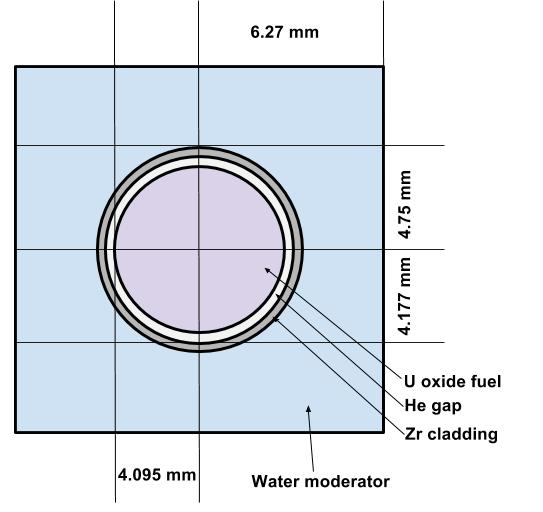 In LWRs Fuel matrix for structural integrity Material that won't melt Technically not really if LFTR Cladding to protect fuel from coolant Can't melt either Must contain fuel and prevent fission product release in the event of fuel failure We can talk about fuel for different reactors though --- # Materials are the strongest design constraint One reason why NuScale is so far ahead is because the fuel is the same Other factors are reactivity heat transfer structural containment no neutron absorbers --- # Fuel has to be cost effective Long residency in the core Standard design for ready production (use in a lot of reactors) Reliability - transients [Quality control](https://www.nrc.gov/reactors/new-reactors/oversight/quality-assurance.html) Technology-neutral --- # Uranium fuel used as metal first Zircaloy clad [Any guesses where?](https://courses.candelalearning.com/x84x9/chapter/fuel-cycle-analysis/) $UF_4+2Mg \rightarrow 2MgF_2+U$ We can also get it from electrorefining Uranium metal has three allotropes --- # $\alpha$ phase is stable up to 600C 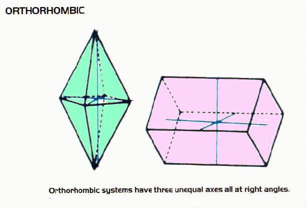 Anisotropic When heated, expands in two different directions and contracts in a third Crystal structure highly asymmetrical Only Mo and Nb form solid solutions Do we know anyone working with U-Mo? --- # $\beta$ phase is stable between 660C to 700C 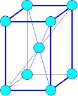 Also anisotropic Both phases orient in preferred direction when metal is deformed Brittle and hard --- # $\gamma$ phase is stable from 760C to 1130C 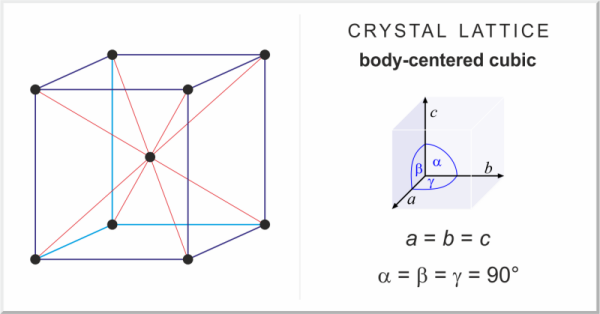 This is isotropic Is this better to use? Irradiation adversely affects thermal conductivity How? --- # Commercial fuel in LWRs is $UO_2$ ceramic 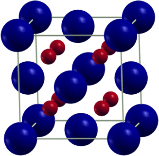 [Why?](http://www.pbs.org/program/rickover-birth-nuclear-power/) Crystallizes in fluorite structure Face centered cubic lattice Oxygen in tetrahedral sites [Phase diagram](http://www.stonybrook.edu/commcms/geosciences/people/faculty/parise/Parise%20Website%201.png) --- # $UO_2$ is used because oxygen has low neutron capture Structurally very stable Coolant is a harsh environment Fission products stay trapped in the matrix But that causes expansion of the fuel High melting point $2865^o C$ --- class: center, middle # What's the down side though? --- # Uranium oxide fuel isn't actually that great on heat transfer Low thermal conductivity [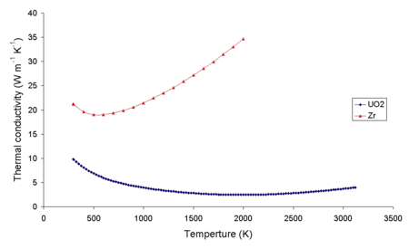](https://en.wikipedia.org/wiki/Nuclear_fuel#/media/File:ZrUthermalcond.png) 10 - 5 W/m/K Surprisingly hard to find comparative data [Figure 11](https://neup.inl.gov/SiteAssets/Final%20%20Reports/NEUP-Project-09-773-Final-Report.pdf) High temperatures cause high thermal gradients How is heat transferred to the coolant? --- # High temperatures cause grain growth 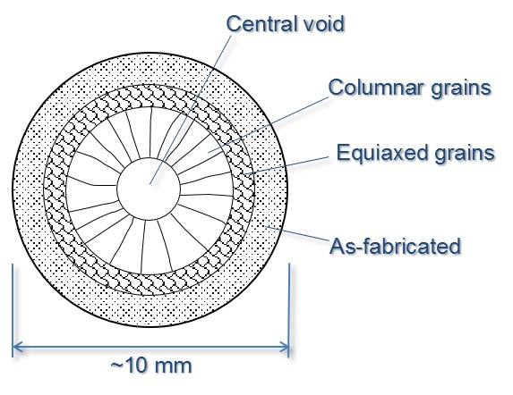 Crystal lattice increase at high temperatures But the fuel is constrained in the cladding High temperatures disordered boundaries means that vacancies can diffuse rapidly Leading to rapid creep Which leads to what? Boundaries have high energy Nucleation - fission products --- # Thermal gradients cause pellets to look like hourglass 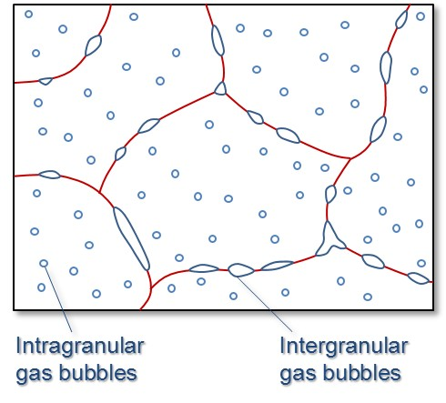 Thermal stress can cause cracking Voids form with fission gas Migrate to grain boundaries Fission gas can still be contained by the cladding --- # Linear heat rate decreases with burnup Less thermal expansion with irradation Reduces the heat transfer with increasing core life of fuel Couldn't find a graph for this though --- # Fuel also grows with burnup Actual growth due to anisotropy of crystal Swelling from grain boundaries and FP gas formation Pellet density decreases due to void formation Neutrons knock atoms out of the lattice creating interstitials Percent change in volume up to 0.7% How does this affect fuel performance? Other U ceramic fuels if there's time --- # Fuel cladding serves many functions Protects fuel from corrosion Contains fission products Facilitates heat transfer --- class: middle, center # What are cladding design requirements? --- # Stainless steel first used But that was for fast reactors Absorption cross section is too high in thermal region Zr and Be are the only metals with melting points about 1000C Why not Be then? Zr is always stuck with hafnium which has high neutron absorption So more chemical processing to remove the hafnium Zircaloy was developed for cladding ($1850^o C$ melting point) Contains other elements Sn, Fe, Cr, Ni --- # SiC melts at $2730^o C$ Robust in molten salts up to $800^o C$ Lower neutron absorption Greater resistance to radiation damage Problematic in terms of mechanical strength It seems to me like we are too locked in to LWR paradigms --- # Burnable poisons are for reactivity control and fuel utilization Fresh core is loaded with excess reactivity Overcome burned fuel, fission product neutron absorbers, negative temperature feedback Always need excess reactivity to in order to increase reactor power How will this affect load following for SMRs? --- # Boron is one of the most common burnable poisons $B_4C$ is a common compound Gadolinium and erbium are used too as oxides Pyrex like my measuring cups are also used Borosilicate glass enclosed in steel tubes Can be inserted into existing guide tube locations in the assemblies Wet burnable absorber uses $Al_2O_3-B_4C$ encased in Zircaloy tube Coolant flows through Also installed in guide tubes --- # Integral fuel absorber applies a coating on pellets Uses $ZrB_2$ The idea is that this absorber does not displace coolant and reduce fission But boron produces He in the fuel rod, so I don't see how that doesn't affect structure It seems like they build in a gap for the He to form --- # Gadolinium pellets can be used in the fuel rods $Gd_2O_3-UO_2$ with natural uranium These are made into rods and inserted into assemblies Does this seem like a weird way to design the reactor? --- class: middle, center # Fuel fabrication --- # To make fuel, first convert $UF_6$ to $UO_2$ Enriched $UF_6$ is delivered as a solid Heated so that it sublimates Reacted with water as: $UF_6+2H_2O \rightarrow UO_2F_2+4HF$ in solution Mixed with ammonia: $2UO_2F_2+6NH_4OH \rightarrow (NH_4)_2U_2O_7+3H_2O$ Calcined with air with to produce $U_3O_8$ Reduced with hydrogen to obtain $UO_2$ powder This is basically the same process from last time Pressed into pellets and sintered (24 h) --- class: middle, center  --- # Pellets then loaded into rods Backfilled with helium Where do we get the helium? Welded shut PWR pressurized to 2000 psi; BWR 1000 psi Etched in nitric hydrofluoric acid Autoclaved with high pressure steam to develop corrosion resistant film --- # Rods are bundled together into assemblies [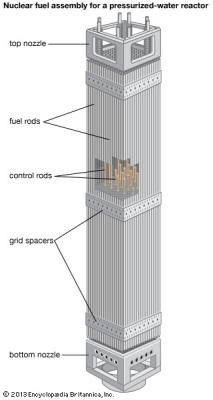](https://media1.britannica.com/eb-media/81/162181-004-C9F17D1F.jpg) Spaces for instrumentation and control rods Typically, PWRs are 17 x 17 assemblies, but some are 15 x 15 12 feet tall For 1.1 GWe, 190 assemblies, 50,000 rods, 18 million pellets BWRs use 8 x 8 or 9 x 9 because the rod goes in between assemblies 750 assemblies, 70,000 rods, 25 million pellets --- # How many fuel related accidents have there been? Fuel swells because of fission product generation Pellets are beveled to have a gap in between them to provide margins Pellet density can increase Volume decrease, where cladding could collapse Specifications require pore size distribution to avoid this Thermal expansion causes deformation, but beveling can also avoid --- # Cladding failures can release fission products Fast power increase causes local stress due to pellet expansion Leading to cracking Fission product release can cause corrosion Hydrogen forms due to radiolysis Over $900^o C, Zr+2H_2O \rightarrow ZrO_2+2H_2$ Why is this important? Causes embrittlement of cladding --- # How is fuel examined for defects? During refueling - "sipping" which is a silly name Assembly is placed in a sealed water-filled container Sample water for fission products 2 - 5 per hour Alternatively, assemblies placed in dry container Elevated temperature environment will cause fission gas release if leaking Easier to detect fission gases Most efficient is inducing a vaccuum Faster to detect Enhances fission gas release --- class: center, middle # Pebble fuel --- # Pebble fuel was envisioned for He cooled reactors Dr. Rudolf Schulten in 1950s thought it up SiC coated uranium 'kernels' with graphite spheres AVR reactor demonstrated concept 1967-88 at 15 MWe Lots of accidents though Bypassed emergency shutdown Opertated at a loss (several million/year) --- # AVR reached highest temperatures at $950^o C$ High temperature led to fuel instablilites Contaminated vessel with fission products Leaked into groundwater in 1978 Reflector broke and trapped pebbles Vessel filled with concrete --- # UCB working on salt cooled PBR [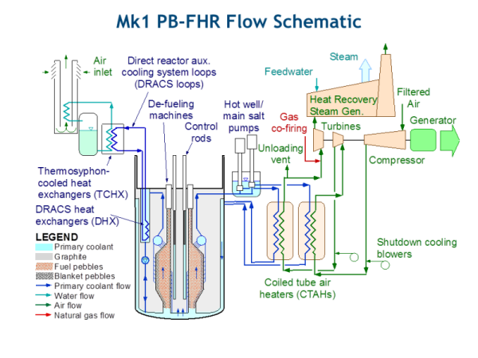](http://fhr.nuc.berkeley.edu/) --- # Each pebble has 9 grams of fuel 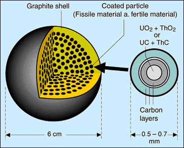 Kernel can be uranium, thorium, plutonium oxides Carbides --- # Two ways to use pebble fuels  --- # Pebbles used for gas cooled reactors High heat - $850^o C - 900^o C$ - hydrogen production Can use pebbles or prism We've seen the prism type at INL PIE Thermal efficency > 40% Graphite moderated Requires ~20% enrichment Problem? --- # Big advantage being able to run up to high temperatures Up to $1800^o C$ fission products contained in TRISO pebble Defense-in-depth fuel design Prism design has high mechanical strength Low thermal gradients --> high thermal conductivity Low thermal expansion Graphite serves as heat sink for metal fission products High outlet heat for Brayton cycle (high efficiency) Can use direct cycle gas turbine --- # [TRISO](https://courses.candelalearning.com/x84x9/chapter/nuclear-fuels/) provides defense in depth design Kernel is the fission energy - 100 GWD/MTU Porous carbon buffer provide voids for fission gas generation Accomodates swelling Inner PyC retains fission gases Mechanical substrate for SiC deposition SiC primary containment for fission products and load bearing layer Outer PyC provides compressive stress due to shrinking during irradiation Retains fission gas Bonding layer for fuel element matrix --- # Fort St. Vrain in Co operated an HTGR 1979-89 He primary coolant Secondary water coolant for steam generators Construction 1968 Commercial power 1979 Thermal efficiency 40% Load following 90 GWD/MTU burnup Combination of uranium and thorium Prismatic --- # It cost relatively less that LWRs $200 million - 60 cents per watt No need for zircalloy Less costly RPV No need for as heavy shielding as LWRs --- # Operational issues rendered the concept problematic Water lubricated seals infiltrated He lines and caused corrosion Some rod drives rusted, affecting shutdown Staff ignored moisture alarms Electrical failures were costly Seemed linked to moisture infiltration Resulted in a lot of shutdowns Economic loss Plant was shut down in 1989 and decommissioned in 1992 [Fort St. Vrain plant provides storied history](http://www.dailycamera.com/boulder-county-news/ci_17661019) --- # [Peach Bottom HTGR](https://nuclearfuel.inl.gov/atf/Reports/ATF%20Metrics%20Report%20Feb%202014.pdf) operated from 1967-74 200 MWth Used fuel removed Pool drained and decontaminated SAFESTOR Final decommissioning for full site (3 units) 2034 Experimental He cooled --- # 40 MWe demonstration plant could load follow down to 30% Thermal efficiency 39% 31 GWD/MTHM, 73 GWD/MTHM (two cores) Cores stored at INL Core 1 half design life 90 fuel elements failed (did not have inner buffer layer) Core 2 full design life Th-HEU fuel 700C outlet, 538C steam --- class: middle, center # MOX --- # We know used fuel is reprocessed by PUREX to make MOX Pu-U ceramic oxide for use in LWRs Challenges are essentially the same as uranium oxides Seven uranium oxide assemblies can produce one MOX assembly + vitrified waste 35% of once-through volume, mass, disposal cost Weapons grade Pu of 5% needed in MOX equivalent to 4.5% enriched U fuel Reactor grade Pu 7% - 11%; averages 9.5% --- class: middle, center # Where does USA make nuclear fuel? --- # There are three NRC licensed plants [Global Nuclear Fuel-Americas](https://www.nrc.gov/info-finder/fc/global-nuc-fuels-america-fuel-fab-lc.html) in Wilmington, North Carolina [Westinghouse Columbia Fuel Fabrication Facility](https://www.nrc.gov/info-finder/fc/westinghouse-fuel-fab-fac-sc-lc.html) in Columbia, South Carolina [AREVA, Inc.,](https://www.nrc.gov/info-finder/fc/areva-np-lc.html) in Richland, Washington All about 1500 MTU/year --- # For cost, client pays for transportation of fuel to site The book says 220 - 240 per kg Couldn't find anything more current ~$7/MWh Save economics for its own chapter $FF=[\frac{PU}{(1-l_C)(1-l_F)}+\frac{PC}{(1-l_F)}]\frac{F}{P}+\frac{PS}{(1-l_F)}\cdot SWU+PF$ --- class: center, middle # Accident tolerant fuels --- # ATF program started with Consolidated Appropriations Act 2012 DOE Office of Nuclear Energy $59M To give priority to developing enhanced fuels and cladding for light water reactors To improve safety in the event of accidents in the reactor or spent fuel pools Technical emphasis and funding priority be given to activities aimed at near-term qualification of meltdown-resistant, accident-tolerant nuclear fuels Testing and utilization by 2020 --- # LOCA results in partial meltdown of nuclear fuel We know hydrogen generation will occur with reaction of water and cladding ATF caught on after Fukushima a lot more Fuel designs have to be compatible with existing reactor systems --- # The goal is enhanced performance at high temperatures Improved reaction kinetics with steam Improved fuel properties Enhanced retention of fission products Slower hydrogen generation rate Improved classing properties --- # Tolerate loss of active cooling for longer time Backward compatible with current fabrication facilities Increase burnup Less assemblies per reload Ehanced safety in off normal conditions Cost competitive --- # Fuel cycle R&D campaign adopted three phased approach to ATF commercialization Feasability assessment and down selection Development and qualification Irradiation testing Commercialization --- # As of 2014, there are several efforts going on Georgia Tech got an IRP to build a new LWR concept Non oxide fuel form Los Alamos is working on new alloys FeCrAl and Mo Mo has improved ductility and oxidation resistance High melting point (2600 C) --- # Performance benefits to uranium oxide modifications are being studied Improved fracture toughness and plasticity Enhanced thermal conductivity Ehnanced oxidation resistance Evolutionary approach --- # PNNL is developing a U-Mo fuel concept I thought INL was actually doing that High linear heat rate, power density, burnup Triple layer of annualr U-Mo - Nb,Cr,Al - Cladding Based on experiences from production reactors at Hanford --- # Areva is working on improved performance Cr doping in the fuel pellet to reduce fission gas generation SiC fibers in the pellet for thermal heat transfer Also lock up iodine in the fuel Coating Zr to reduce hydrogen pickup --- # Tennessee working on ceramic coating for Zr cladding Nitrides, oxides, carbides [C3 project](https://neup.inl.gov/SiteAssets/Final%20%20Reports/FY%202012/12-4722%20NEUP%20Final%20Report.pdf) Decrease oxidation and hydrogen pickup During LOCA, delay oxidation of Zr --- # Irradiation testing to be done at ATR Results will inform down selection of concepts Eventually testing those designs in TREAT --- #NEA also formed Expert Group on Increased Accident Tolerance of Fueld for LWRs 31 countries - 85% installed capacity for nuclear Integral experiments for actinide management International nuclear data evaluation Scientific issues of the fuel cycle Multiscale modeling and structural materials Nuclear criticality safety Scientific issues of reactor systems --- # Nine countries working on ATF research Everyone seems to be working on SiC cladding Japan, France, USA, Jieun working on stainless steel USA is working on multiple fuel concepts Japan, Korea, China working on USi and enhanced uranium oxide --- # France is working on a Cr coated cladding Stay in tact for 4 hours at 1000C Good resistance to oxidation and hydrogen up-take Absence of significant zirconia formation nor oxygen diffusion No significant hydrogen pick-up Minimal weight gain --- # Kyoto University leading many efforts in Japan Irradiation test of SiC composite sample Development of stainless steel cladding Development of pebble bed fuel for LWR Test simulating severe accident condition --- # Korea also working on coated cladding Also using Cr FeCrAl-Zr duplex cladding High strength, oxidation resistance SiC tubes --- # Korea also working on micro cell uranium oxide Enhanced fission product retention Concept successfully implemented Cs preferentially reacts with grain boundary Pellets deform more easily than uranium oxide pellets Metal micro-cell of $UO_2,CrO_3$ Also working on TRISO --- # INL (and others) released a report in 2014 on ATF performance metrics In [OER](https://courses.candelalearning.com/x84x9/chapter/nuclear-fuel-resources/) Categories ranked 0 to 5 Benefit/vulnerability of performace attributes relative to performance regimes 1. Fabrication / Manufacturability (to include Licensibility) 2. Normal Operation and Anticipated Operational Occurrences (AOOs) 3. Postulated Accidents (Design Basis) 4. Severe Accidents (Beyond Design Basis) 5. Used Fuel Storage / Transport / Disposition (future reprocessing) Some of this PRA based --- # Compared relative to current uranium oxide - Zr system High benefit + high vulernability = high risk + high payoff Modest benefit + low vulnerability = low risk + modest payoff --- # Four phase testing program ATF-1 drop in capsule testing with ATR (no contact with coolant) 2018 ATF-2 loop testing in ATR 2022 (December 2017 test) ATF-3 transient testing of rods in TREAT 2025 CM-ATF-x in commerical plant ATF-4 transient testing of commercial rods in TREAT --- class: center, middle # EBR --- # EBR-I produced 200 kW to power the building Validated breeder concept Plutonium fuel in final loading Core, light inner blanket, denser cup-shaped outer blanket Inner blanket, natural U metal rods Outer blanket steel clad uranium bricks (we've seen these) Graphite reflector NaK coolant Cylindrical slugs of HEU fuel with stainless steel cladding Later HEU-Zr --- # EBR-II operated on metal fuels for 30 years at 20 MWe Demonstrated pyroprocessing on engineering scale and closed fuel cycle But no one will give me and Jieun any data HEU-Pu-Zr fuel, stainless steel cladding with DU blanket Metal fuel can achieve high burnup if allow room for swelling Let fission gas escape from fuel and collect in plenum Burnup at less than 200 GWD/MTHM in 1985 Seven cores reprocessed by 1969 (started in 1964) Continuing efforts for metallic fuels at INL --- class: center, middle ##[Fast Reactor Operating Experience in the U.S.](https://www.iaea.org/INPRO/cooperation/4th_GIF_Meeting/32-McFarlane_US_SFR_Operating_Experience.pdf) ---